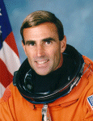

Lyndon B. Johnson Space Center
Houston, Texas 77058
|
National Aeronautics and Space Administration Lyndon B. Johnson Space Center Houston, Texas 77058 |
 |
Biographical Data |
||
William G. Gregory (LIEUTENANT COLONEL, U.S. AIR FORCE, RET.)
NASA Astronaut (former)
PERSONAL DATA: Born May 14, 1957, in Lockport, New York. Married. He enjoys distance running, biking, triathlon, water and snow skiing. He has competed in the World Championships for Duathlon and the IRONMAN Triathlon.
EDUCATION: Graduated from Lockport Senior High School, Lockport, New York, 1975; Bachelor of Science in Engineering Sciences from the United States Air Force Academy, 1979; Master of Science in Engineering from Columbia University, 1980; Master of Science in Management from Troy State, 1984.
ORGANIZATIONS: Member of the U.S. Air Force Academy Association of Graduates, the Order of Daedalians, and several boards of professional organizations.
SPECIAL HONORS: Awarded the Defense Superior Service Medal, the Air Force Meritorious Service Medal, the Air Force Commendation Medal with Oak Leaf Cluster, the NASA Space Flight Medal, and the National Defense Service Medal. Lt. Col. Gregory is a Distinguished Graduate of the United States Air Force Academy, a Guggenheim Fellowship recipient, and is a Professional Engineer registered in the State of Colorado. Awarded the 1996 Ellis Island Medal of Honor. Member of the Arizona Governor’s Comission on Aerospace & Defense and Master CFI-Aerobatic.
EXPERIENCE: Between 1981 and 1986, Lt. Col. Gregory served as an operational fighter pilot flying the D and F models of the F-111. He attended the U.S. Air Force Test Pilot School in 1987, and between 1988 and 1990, he served as a test pilot at Edwards Air Force Base flying the F-4, A-7D, and all five models of the F-15. Having flown in excess of 40 types of aircraft, Gregory has accumulated more than 6,000 hours of flight time.
Selected by NASA in January 1990, Lt. Col. Gregory became an astronaut in July 1991. His technical assignments included Shuttle Avionics Integration Laboratory (SAIL); Astronaut Office Representative for Landing/Rollout, T-38 Flying Safety; Kennedy Space Center Astronaut Support Personnel (ASP); Capsule Communicator (CAPCOM) in mission control; Astronaut Office Representative for Rendezvous and Proximity Operations; and Spacecraft Operations Branch Chief. He flew on STS-67 (1995) and has logged 400 hours in space. Lt. Col. Gregory retired from the Air Force and left NASA in the summer of 1999.
Lt. Col. Gregory spent nine years in Phoenix, Arizona, with Honeywell Defense & Space as the Senior Sales Manager for Human Spaceflight, landing the avionics role on the Crew Exploration Vehicle (CEV). Beginning August 2008, he spent two years as Vice President of Business Development for Micro-Tronics, Inc., in Tempe, Arizona. Then, in November 2010, he was named as Vice President of Business Development for Qwaltec, Inc for 2.5 years. Since April 2013, Gregory has been an Advanced Instructor Pilot for Aviation-Performance-Solutions in Mesa, Arizona flying the Extra 300L, in addition to his Pitts Special S-2C.
SPACE FLIGHT EXPERIENCE: Lt. Col. Gregory served as the STS-67 pilot on the seven-person astronomical research mission aboard the Space Shuttle Endeavour. Launching from the Kennedy Space Center on March 2, 1995, and landing at Edwards Air Force Base on March 18, 1995, the crew established a new mission duration record of 16 days, 15 hours, 8 minutes and 46 seconds, while completing 262 orbits and traveling nearly seven million miles. This second flight of the ASTRO telescope primary payload also included numerous secondary payloads.
OCTOBER 2014
{kind=link}